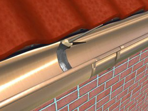
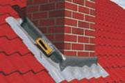
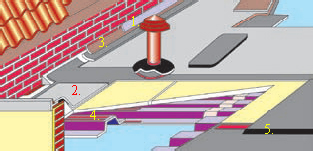
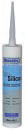

АКВАБЛОКЕР и АКВАБЛОКЕР ЛИКВИД
Гидроизоляция на основе MS Полимера широкого спектра применения:

• гидроизоляция плоских крыш
• герметизация соединения дымовых труб и кровли
• герметизация мансардных окон
• герметизация водостока
• и т.д.

подробнее
Системное решение для обустройства кровли:

1. Герметик Бау-Силикон
Нейтральный, отверждающийся при воздействии влаги, без содержания растворителя высококачественный силиконовый герметик.
Для гидроизоляции:
· алюминиевых, зажимных, кровельных листов и пластин
· мест примыкания к дымовым трубам
· слуховых окон
Подробнее...
Система санации бетона дает возможность устранять дефекты на строительных элементах из бетона и железобетона на длительный срок с помощью небольшого числа материалов, соответствующих техническим нормам и удобных при укладке
КОМПОНЕНТЫ СИСТЕМЫ НА МИНЕРАЛЬНОЙ ОСНОВЕ:
Коррохафт Плюс
Полимермодифицированный раствор на основе цемента. Он может применяться, как антикоррозийное покрытие арматурной стали, так и как адгезионный слой для последующего нанесения репрофилирующего раствора.
Расширяющийся раствор стандартный I быстродействующий
Армированный волокном ремонтный раствор (MG III по DIN 1053). Пригоден для локального ремонта, в том числе и для сильно нагруженных бетонных поверхностей. Материал можно укладывать - в том числе и механизированным способом - за одну операцию слоем толщиной до 10 см.
КОМПОНЕНТЫ СИСТЕМЫ НА ОСНОВЕ ЭПОКСИДНОЙ СМОЛЫ:
Эпоксан FBA
Двухкомпонентная, не содержащая растворителей, жидкая эпоксидная смола. После отверждения становится жёстко-эластичным. Выдерживает значительные механические нагрузки (в частности, движение транспорта). Устойчив ко многим химикатам (в том числе, к минеральным маслам и смазкам). Не образует «водяных пятен». Служит для покрытия пылящих бетонных полов, а также в качестве грунтовки для последующих покрытий.
Эпоксан ELH
Двухкомпонентная, не содержащая растворителей эпоксидная смола. Применима и на влажном основании. После отверждения становится мягко-эластичной и устойчивой к моторным маслам, дизельному топливу и бензину. Укладывается или распыляется с присадкой (песок, цветной кварц, базальт и т.д.). Может применяться для формирования износостойких покрытий полов. Не прилипает к инструменту и не образует «водяных пятен».
Подробнее...